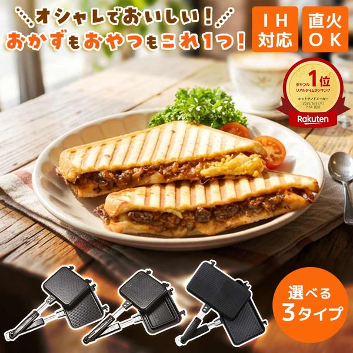
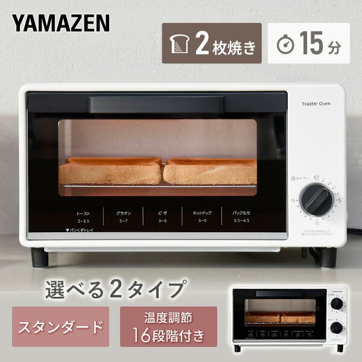
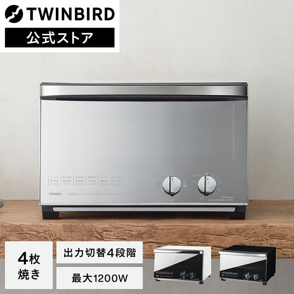
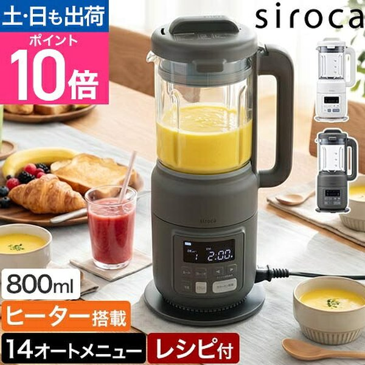
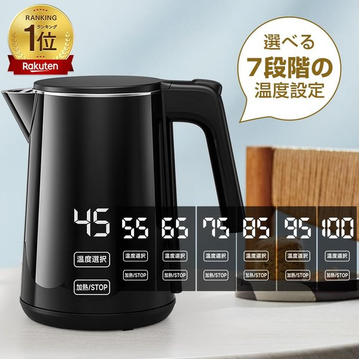
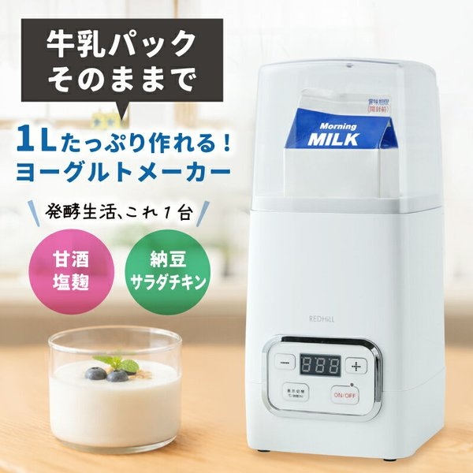
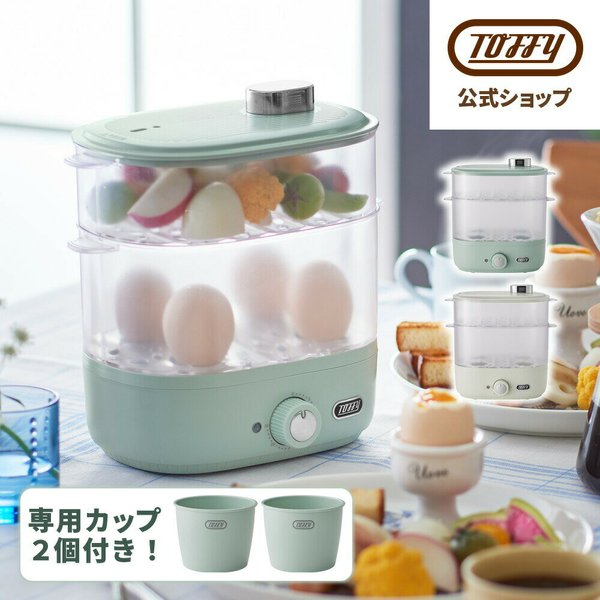
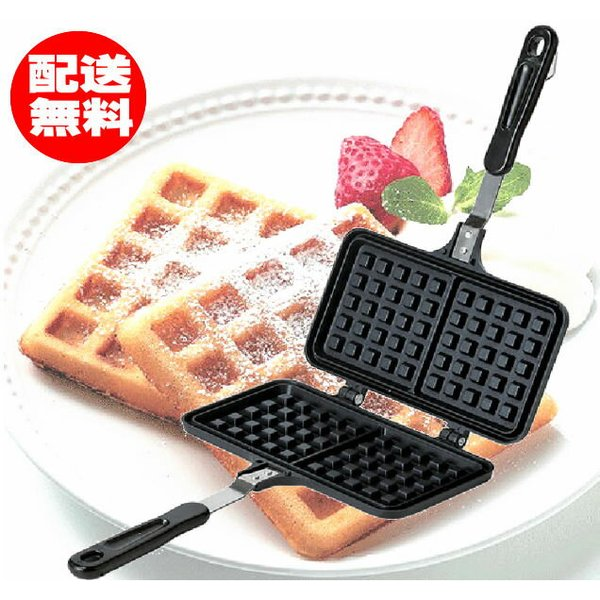
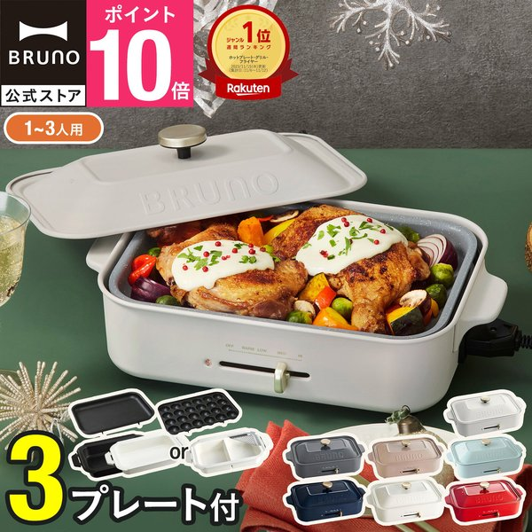

【2026年最新】冬の朝が劇的に時短＆贅沢に！トースター・ホットサンドメーカー・スープメーカー＆朝食家電おすすめ10選
冬の朝は、布団から出るのが遅れるぶん、朝食の時間が削られます。そこで効くのが「入れて待つだけ」の家電です。トースター、ホットサンドメーカー、スープメーカーは、手数が少ないわりに満足度の高い朝食を作れます。
選ぶ軸は、放置できるか、洗いものが少ないか、そして2人分を一度に作れるかです。パンはトースターで焼き直すだけでも満足度が変わり、ホットサンドメーカーは具を挟んで焼くだけで1食になります。スープメーカーは材料を入れてボタンを押せば、ポタージュや豆乳ができあがります。電気ケトルは温度を変えられると、白湯・緑茶・コーヒーを使い分けられます。買う順番は、パンを食べる頻度が高いならトースター、休日の朝を楽しみたいならホットサンドメーカーが先です。
本記事では、楽天市場で人気・高評価の朝食家電10選を、実売価格とレビュー評価つきで写真付き紹介します。
- おすすめ10選 スペック・特徴比較表
- BEST 1｜レコルト ホットサンドメーカー 耳まで焼ける厚焼きタイプ
- BEST 2｜Latuna ホットサンドメーカー 直火・IH対応 2枚焼き（上下分離型）
- BEST 3｜山善 オーブントースター 2枚焼き YTS-S100／YTS-C101
- BEST 4｜ツインバード ミラーガラスオーブントースター 4枚焼き TS-D047B
- BEST 5｜シロカ スープメーカー おうちシェフブレンダー SM-S251（14メニュー）
- BEST 6｜電気ケトル 1.0L 7段階温度調節・4時間保温（二重構造）
- BEST 7｜ヨーグルトメーカー 1000ml 牛乳パック対応（25〜65℃・1〜48時間）
- BEST 8｜Toffy 電気蒸し器 フードスチーマー 2段（温野菜・ゆで卵・サラダチキン）
- BEST 9｜ワッフルメーカー 直火タイプ ダブル（フッ素加工・ベルギー風）
- BEST 10｜BRUNO コンパクトホットプレート BOE021（プレート2種・1〜3人用）
- 【読者負担0円】買わなくても得する無料サービス
- まとめ：朝食家電10選の選び方
| 順位 | 商品名 | ブランド | 最大の特徴・おすすめ理由 | 総合評価 |
|---|---|---|---|---|
| BEST 1 | レコルト ホットサンドメーカー 耳まで焼ける厚焼きタイプ | レコルト（récolte） | 耳まで閉じて焼ける | 4.69 |
| BEST 2 | Latuna ホットサンドメーカー 直火・IH対応 2枚焼き（上下分離型） | Latuna | IH・ガス両対応で置き場所不要 | 4.62 |
| BEST 3 | 山善 オーブントースター 2枚焼き YTS-S100／YTS-C101 | 山善（YAMAZEN） | 16段階の温度調節と15分タイマー | 4.45 |
| BEST 4 | ツインバード ミラーガラスオーブントースター 4枚焼き TS-D047B | ツインバード（TWINBIRD） | 4枚同時に焼ける | 4.53 |
| BEST 5 | シロカ スープメーカー おうちシェフブレンダー SM-S251（14メニュー） | シロカ（siroca） | 材料を入れてボタンだけで完結 | 4.65 |
| BEST 6 | 電気ケトル 1.0L 7段階温度調節・4時間保温（二重構造） | キッチン家電専門店（マイホームショップ） | 7段階の温度設定 | 4.42 |
| BEST 7 | ヨーグルトメーカー 1000ml 牛乳パック対応（25〜65℃・1〜48時間） | 発酵フードメーカー専門店（ホビナビ） | 牛乳パックをそのまま使える | 4.63 |
| BEST 8 | Toffy 電気蒸し器 フードスチーマー 2段（温野菜・ゆで卵・サラダチキン） | Toffy | 2段で同時に蒸せる | 4.60 |
| BEST 9 | ワッフルメーカー 直火タイプ ダブル（フッ素加工・ベルギー風） | キッチン用品店（バーゲンプラザ） | 2枚同時に焼ける | 4.56 |
| BEST 10 | BRUNO コンパクトホットプレート BOE021（プレート2種・1〜3人用） | BRUNO（ブルーノ） | プレート2種付きで用途が広い | 4.75 |
レコルト ホットサンドメーカー 耳まで焼ける厚焼きタイプ

食パンの耳まで閉じられる電気式のホットサンドメーカー。具を挟んでセットし、タイマーが切れるまで待つだけで、外はカリッと中はとろりとしたホットサンドができます。上下両面から焼くので、片面だけ焦げる心配がありません。50種のレシピが付属し、食パン1枚でも焼けるので、食べる量が少ない朝にも使えます。楽天市場での実売価格は約4,950円（2026年11月時点）。
- 耳まで閉じて焼ける
- 50種のレシピ付き
- レビュー3,572件・評価4.69
- 具を入れすぎると閉じにくいので、8割ほどに留める
Latuna ホットサンドメーカー 直火・IH対応 2枚焼き（上下分離型）

コンロの上で焼く直火タイプのホットサンドメーカー。電気を使わないので置き場所を取らず、IHでもガスでも使えます。上下が分離するので、洗ってそのまま食器として出せます。耳を圧着して閉じる形で、具がはみ出しにくいのが利点です。電気式より安く、1枚ずつ焼けるので2人分を続けて作れます。楽天市場での実売価格は約2,980円（2026年11月時点）。
- IH・ガス両対応で置き場所不要
- 上下分離で洗いやすい
- レビュー1,813件・評価4.62
- 焼き加減は火加減で決まるので、最初は弱火で試す
山善 オーブントースター 2枚焼き YTS-S100／YTS-C101

2枚焼きのオーブントースターで、15分タイマーと16段階の温度調節が付いています。トーストはもちろん、切り餅や冷凍パン、ピザの温め直しまでこなせます。食パンを1〜2枚焼くだけの朝に、庫内が広すぎないサイズが扱いやすく、予熱いらずで焼き上がりも速いです。価格は3,000円を切り、毎日使う道具として気軽に置けます。楽天市場での実売価格は約2,980円（2026年11月時点）。
- 16段階の温度調節と15分タイマー
- 2枚焼きで朝にちょうどいい
- レビュー1,155件・評価4.45
- 2枚焼きなので、家族4人の朝には2回に分けて焼く
ツインバード ミラーガラスオーブントースター 4枚焼き TS-D047B

4枚焼きのオーブントースターで、出力を4段階に切り替えられます。食パンが一度に4枚焼けるので、家族の朝食をまとめて用意したいときに効きます。庫内が広く、グラタン皿やピザも入るサイズです。ミラーガラスの扉で、庫内の様子が見えやすく、焼き加減を確認しながら使えます。楽天市場での実売価格は約7,980円（2026年11月時点）。
- 4枚同時に焼ける
- 出力4段階の切り替え
- レビュー334件・評価4.53
- 本体が大きく、置き場所の幅を確保する必要がある
シロカ スープメーカー おうちシェフブレンダー SM-S251（14メニュー）

材料を入れてメニューを選ぶだけで、スープや豆乳、スムージーができる加熱式ブレンダー。800mlの耐熱ガラス容器で、2人分のスープを一度に作れます。8枚刃で撹拌したあと加熱まで自動で進むので、鍋とミキサーを洗う手間がありません。14のオートメニューがあり、朝はポタージュ、夜はスープという使い分けもできます。楽天市場での実売価格は約19,800円（2026年11月時点）。
- 材料を入れてボタンだけで完結
- 加熱と撹拌を1台で行う
- レビュー704件・評価4.65
- 容器がガラスなので、洗うときは重さを感じる
電気ケトル 1.0L 7段階温度調節・4時間保温（二重構造）

7段階に温度を設定できる電気ケトル。45℃の白湯、55℃の緑茶、85℃のコーヒーと、飲み物に合わせて沸かし分けられます。4時間の保温が付いているので、朝に沸かせば昼まで給湯の手間がありません。二重構造で外側が熱くなりにくく、空焚き防止も付いています。1.0Lは2人分のカップ2杯とポット1杯に足りる量です。楽天市場での実売価格は約4,980円（2026年11月時点）。
- 7段階の温度設定
- 4時間保温で沸かし直し不要
- レビュー2,865件・評価4.42
- 保温を使うと電気を消費するので、使わない日は切る
ヨーグルトメーカー 1000ml 牛乳パック対応（25〜65℃・1〜48時間）

牛乳パックをそのままセットできるヨーグルトメーカー。温度を25〜65℃で1℃単位、時間を1〜48時間で設定でき、ヨーグルトのほか甘酒、塩麹、サラダチキンも作れます。1Lの容器付きで、家族で食べる量をまとめて仕込めます。朝に食べるヨーグルトを前の晩に仕込んでおけば、朝の支度が1品減ります。楽天市場での実売価格は約4,780円（2026年11月時点）。
- 牛乳パックをそのまま使える
- 25〜65℃・1〜48時間の設定
- レビュー1,208件・評価4.63
- 発酵には数時間かかるので、仕込みは前の晩に行う
Toffy 電気蒸し器 フードスチーマー 2段（温野菜・ゆで卵・サラダチキン）

2段式の電気スチーマーで、下段に卵、上段に野菜を入れて同時に蒸せます。タイマーを合わせて待つだけで、温野菜やゆで卵、シューマイができあがります。油を使わないので後片付けが軽く、朝に野菜を1品足したいときに便利です。コンパクトな卓上サイズで、キッチンに出しっぱなしにできます。楽天市場での実売価格は約5,940円（2026年11月時点）。
- 2段で同時に蒸せる
- 油を使わず後片付けが軽い
- レビュー162件・評価4.60
- 蒸気が出るので、設置場所は壁から少し離す
ワッフルメーカー 直火タイプ ダブル（フッ素加工・ベルギー風）

コンロの上で焼く直火タイプのワッフルメーカー。2枚を同時に焼けるので、休日の朝に家族分をまとめて用意できます。フッ素加工で、焼き上がりを傷つけずに取り出せます。ベルギーワッフルのほか、モッフルや餅を挟んで焼く使い方もでき、ホットケーキミックスがあれば10分ほどで焼けます。電気式と違って置き場所を取らないのも利点です。楽天市場での実売価格は約2,970円（2026年11月時点）。
- 2枚同時に焼ける
- フッ素加工で取り出しやすい
- レビュー289件・評価4.56
- 直火なので、焼いているあいだはコンロから離れない
BRUNO コンパクトホットプレート BOE021（プレート2種・1〜3人用）

1〜3人用のコンパクトなホットプレートで、平面プレートと鍋が付いたセット。最大250℃まで無段階で調整でき、朝はトーストと目玉焼き、夜は焼肉と使い回せます。卓上で完結するので、焼きたてをそのまま皿に移せます。プレートは着脱式で洗いやすく、休日の朝に少し手をかけた食事をしたいときに向いています。楽天市場での実売価格は約14,850円（2026年11月時点）。
- プレート2種付きで用途が広い
- 250℃まで無段階調整
- レビュー1,194件・評価4.75
- 1〜3人用のサイズなので、4人分を一度に焼くには不向き
この記事の商品を買う前に、まずは無料で得する選択肢をチェック。どれも登録・利用は0円で、無料期間中に解約すれば料金はかかりません。読みたい雑誌がある人、ポイントを貯めたい人、アンケートなら気軽という人、それぞれに合うものを選べます。
初回31日無料・無料期間中に解約すれば0円 → 楽天ポイントモール｜登録無料で毎日ポイ活
買い物なしでもポイントが貯まる無料サービス → 楽天インサイト｜アンケートに答えてポイント
登録無料・すきま時間のアンケートで貯まる → 楽天カード｜年会費永年無料
新規発行・年会費ずっと0円 →
4つのサービスの違いと使い分けは「出費0円で得する！買わずにポイントが貯まる無料サービス厳選4選」でまとめています。
💡 まとめ：朝食家電10選の選び方
朝食家電は、支度の手数を減らす順番で揃えると失敗しません。まずトースターでパンを焼き直す習慣を作り、次にホットサンドメーカーで具を挟む1食を足します。スープメーカーがあれば、野菜を入れてボタンを押すだけで温かい1品が増え、電気ケトルは温度設定で飲み物の幅が広がります。ヨーグルトメーカーと電気蒸し器は前の晩の仕込みと合わせると効果が出ます。休日の朝はワッフルメーカーやホットプレートで少し手をかけると、平日との切り替えになります。洗いやすいかどうかが毎日続くかの分かれ目なので、着脱式かどうかを必ず確認してください。
楽天市場では「5と0のつく日」や「お買い物マラソン」などのキャンペーンに合わせて購入すると、ポイント還元が最大化してお得に手に入ります。ぜひチェックしてみてくださいね。